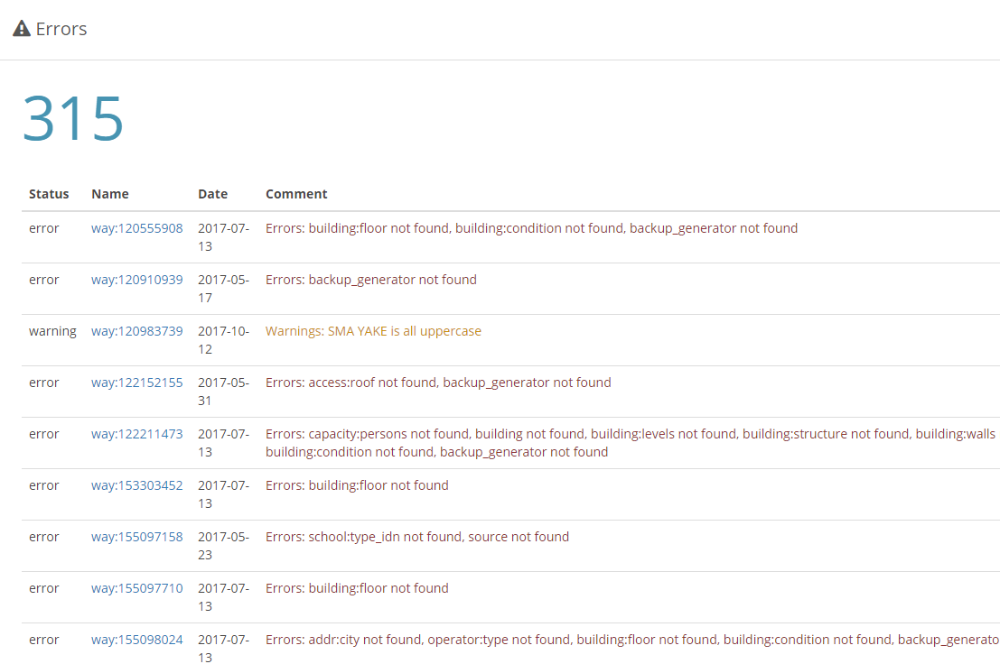
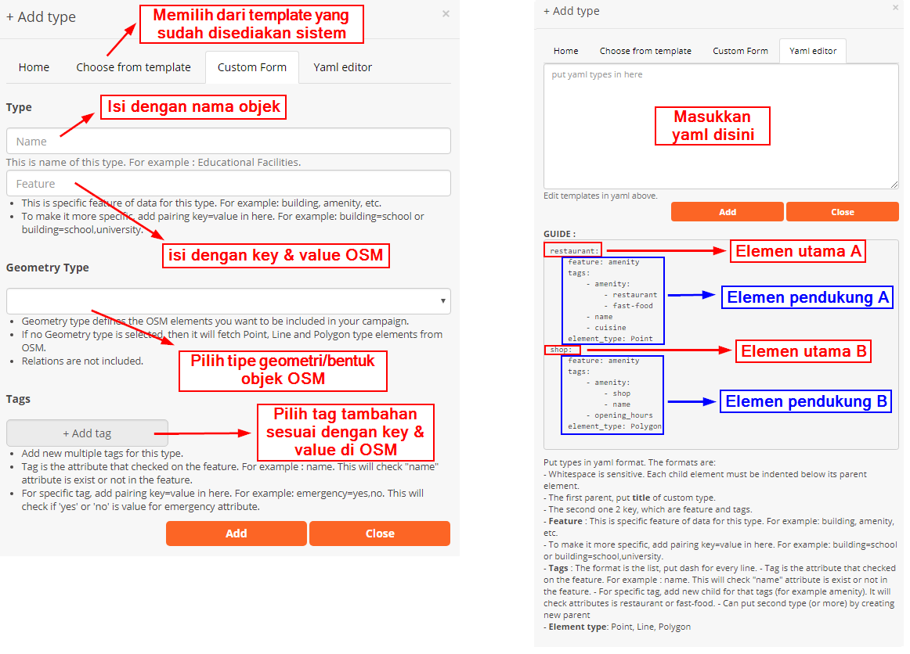
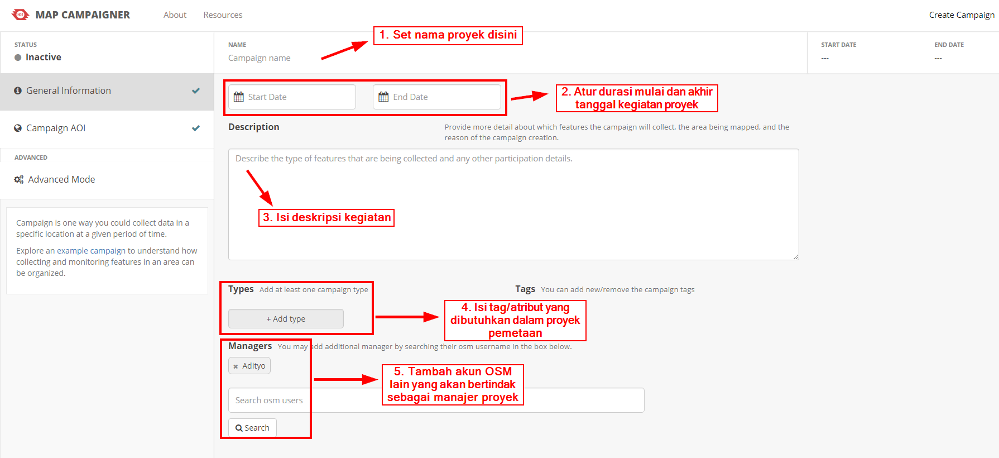
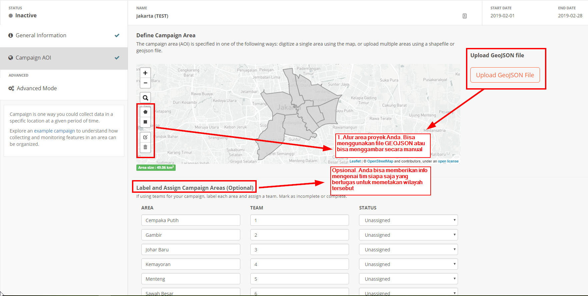
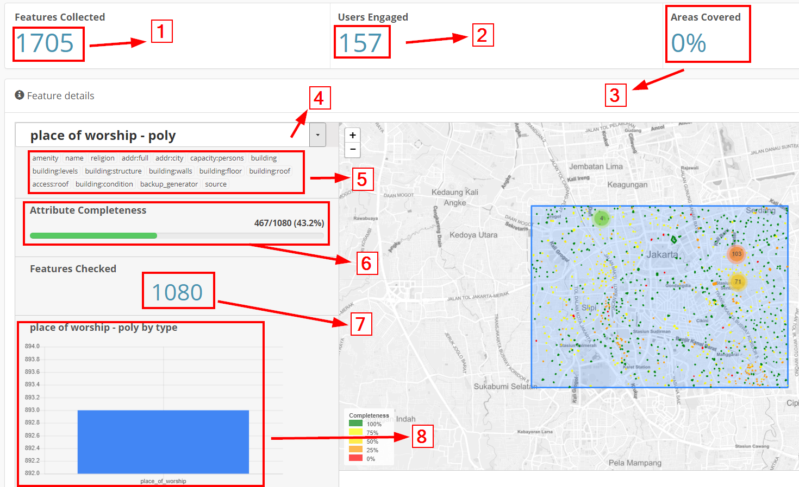

Membuat dan Mengelola Map Campaigner untuk Pemetaan
Tujuan pembelajaran:
- Mengetahui dan memahami cara kerja Map Campaigner
- Mengoperasikan Map Campaigner untuk membuat kegiatan pemetaan
- Mengoperasikan Map Campaigner untuk memantau kegiatan pemetaan
Dalam melaksanakan proyek pemetaan seringkali Anda membutuhkan sebuah laporan terkait progres kegiatan tersebut dalam sebuah data statistik mengenai seberapa banyak objek yang telah terpetakan dalam kegiatan tersebut. Terdapat beberapa alat yang bisa digunakan untuk mendapatkan data statistik tersebut. Salah satu alat yang akan kita pelajari saat ini adalah Map Campaigner.
I. Apa itu Map Campaigner?
Map Campaigner merupakan sebuah alat yang ditujukan untuk mengumpulkan semua manajer proyek dan juga surveyor ke dalam satu platform. Manajer proyek bisa mengatur kegiatan dengan tipe yang spesifik sesuai dengan kebutuhan mereka. Setiap kegiatan pemetaan yang dibuat oleh manajer proyek bisa diatur secara spesifik terkait data dan objek yang dikumpulkan kemudian akan disajikan dalam setiap proyek pemetaan.
II. Manfaat dan contoh penggunaan Map Campaigner
Map Campaigner bertujuan memudahkan para manajer proyek dalam memantau proyek pemetaan mereka. Sebagai contoh disini adalah kegiatan pemetaan yang dilakukan oleh tim HOT untuk memetakan semua tempat ibadah, sekolah, universitas dan sekolah tinggi yang ada di Jakarta Pusat. Dengan menggunakan Map Campaigner, Anda bisa melihat berapa banyak total objek yang sudah terpetakan dalam kegiatan proyek ini, kemudian berapa banyak pengguna OpenStreetMap yang membantu untuk turut serta dalam proyek pemetaan ini, baik secara sukarela maupun yang tergabung ke dalam tim proyek pemetaan.

Dengan menggunakan Map Campaigner, Anda juga bisa mengetahui berapa banyak objek yang sudah lengkap secara definisi tags atau atribut yang dibutuhkan. Misalkan pada gambar di atas, terlihat bahwa dari kegiatan proyek pemetaan ini berhasil memperoleh 1.705 objek dengan menjangkau pengguna sebanyak 157 pengguna (baik yang secara sukarela maupun termasuk tim surveyor). Map Campaigner juga memberikan informasi mengenai kelengkapan semua data yang dikumpulkan, misalnya dari 486 objek sekolah yang terpetakan, hanya 36,2% dari objek sekolah tersebut yang lengkap terpetakan dari segi atribut informasi yang dibutuhkan untuk proyek pemetaan ini.
Map Campaigner juga menyajikan fitur penjaminan kualitas dari segi kelengkapan atribut suatu objek di OSM. Dengan Map Campaigner Anda bisa melihat berapa banyak objek yang masih belum lengkap dari segi atribut data yang sudah ditentukan sebelumnya. Anda bisa mengunduh semua objek tersebut dan kita perbaiki dengan menggunakan JOSM.

III. Membuat Proyek Pemetaan Baru di Map Campaigner
Sampai saat ini Anda telah mengetahui apa itu Map Campaigner dan apa saja manfaat dan contoh Map Campaigner. Anda mungkin akan menggunakan Map Campaigner untuk proyek pemetaan Anda sendiri. Agar dapat membuat project baru, Anda harus login terlebih dahulu dengan akun OpenStreetMap Anda. Setelah Anda berhasil login dengan akun Anda, selanjutnya Anda perlu mengklik tombol Create Campaign. Berikutnya terdapat beberapa tahapan setelah Anda berhasil login dengan akun OpenStreetMap Anda. Setelah mengklik tombol Create Campaign, Anda akan diarahkan ke halaman pembuatan proyek campaign baru. Pada halaman ini terdapat dua tahapan: mengatur informasi dasar dan mengatur area kerja.
a. Mengatur Informasi Dasar untuk Proyek Campaign Anda
Pada bagian ini, Anda akan mengisi informasi dasar untuk proyek Anda. Anda harus mengisi beberapa informasi pada halaman ini:
- Nama proyek. Pada bagian ini, Anda cukup mengisikan nama proyek yang sedang Anda lakukan.
- Durasi proyek berlangsung. Pada bagian ini, Anda akan mengatur durasi proyek berlangsung. Anda bisa memberikan tanggal yang telah lampau apabila proyek pemetaan yang Anda lakukan adalah proyek pemetaan yang sudah selesai.
- Deskripsi proyek. Pada bagian ini, Anda akan mengisikan mengenai deskripsi kegiatan proyek.
- Atribut/tags yang dibutuhkan. Pada bagian ini Anda akan memberikan atribut OpenStreetMap yang dibutuhkan selama proyek pemetaan berlangsung. Untuk atribut OpenStreetMap yang dibutuhkan, Anda bisa mengacu pada halaman Wikipedia1 atau pada modul Model Data OpenStreetMap. Format pengisian pada halaman ini Anda bisa memilih menggunakan struktur data YAML (yang sudah Anda pelajari pada modul Penggunaan YAML pada HOT Export) atau dengan versi mudah yang sudah disediakan pada situs ini.

Catatan:
Saat memasukkan tag/atribut dalam format YAML. Ada beberapa hal yang harus diperhatikan: - Penggunaan spasi sangat sensitif disini. - Satu elemen terdiri dari elemen utama dan elemen pendukung - Semua elemen dibawah elemen utama (elemen pendukung) harus berada beberapa spasi dibandingkan elemen utama - Isi elemen pendukung = feature, tags, & element_type - feature merupakan kategori yang ada di OSM. Untuk lebih jelasnya bisa melihat wikipedia OSM - Agar lebih spesifik, Anda bisa menggunakan set key & value seperti misalnya building=school atau amenity=hospital - tags merupakan kumpulan atribut (key & value) OSM yang akan diperiksa oleh sistem. Harap cek wikipedia atau modul Model Data OpenStreetMap - element_type merupakan jenis objek OSM yang akan diperiksa. Apakah titik (point), garis (line), atau area (polygon)
- Menambahkan manajer proyek lainnya (opsional). Pada bagian ini Anda bisa menambahkan akun OSM lainnya sebagai manajer proyek campaign apabila proyek yang Anda kerjakan terdapat lebih dari satu orang manajer proyek. Peran dari manajer proyek ini adalah mereka bisa menambahkan atribut baru untuk dihitung atau mengubah informasi yang ada pada proyek campaign mereka.

b. Mengatur Area Kerja untuk Project Campaign Anda
Setelah Anda berhasil mengatur informasi dasar, langkah berikutnya adalah Anda harus mengatur area kerja proyek Anda. Pada bagian ini, terdapat dua cara untuk mengatur area kerja proyek Anda.
Cara pertama adalah dengan menggunakan alat yang ada pada bagian sebelah kiri peta. Anda bisa menggambar kotak ataupun menggambar secara bebas dengan menggunakan alat tersebut. Hal yang perlu diingat adalah luas area proyek campaign tidak boleh lebih dari 315 km2. Apabila proyek pemetaan Anda memiliki luas lebih dari yang telah disebutkan, disarankan untuk membagi wilayah proyek pemetaan tersebut kedalam beberapa bagian agar dapat dibuat di Map Campaigner.
Cara kedua adalah dengan menggunakan data batas administrasi dalam format GeoJSON. Dengan menggunakan data tersebut, Anda dapat langsung melihat area kerja proyek Anda yang sudah terbagi menjadi beberapa bagian.
Setelah mengatur area kerja proyek, Anda dapat menetapkan tim mana saja yang bertugas untuk area proyek yang sudah ditentukan sebelumnya. Pengaturan tim ini sifatnya opsional dan bertujuan untuk memudahkan memantau perkembangan tim Anda.

IV. Tampilan Halaman Proyek Map Campaigner Anda
Setelah berhasil membuat proyek campaign, Anda bisa langsung menuju halaman utama untuk melihat proyek. Ketika membuka proyek pemetaan, Anda akan disajikan beberapa informasi mulai dari data statistik, daftar kesalahan/error, dan grafik pengguna yang turut serta dalam pemetaan.

- Feature collected. Bagian ini menjelaskan tentang berapa banyak total objek yang dikumpulkan pada area kerja.
- User engaged. Menjelaskan tentang berapa banyak pengguna OSM yang turut serta membantu memetakan baik secara sukarela maupun tidak.
- Area covered. Menjelaskan tentang berapa persen area yang telah lengkap terpetakan.
- Feature selection. Untuk memilih fitur OSM yang telah ditentukan sebelumnya.
- Selected attribute. Menjelaskan beberapa atribut OSM yang harus dicek oleh sistem untuk mengetahui kelengkapan atributnya.
- Attribute completeness. Menjelaskan tentang berapa persen objek OSM yang telah lengkap memiliki atribut seperti yang sudah ditentukan pada bagian selected attribute.
- Feature checked. Menjelaskan tentang jumlah objek OSM yang telah dikumpulkan, spesifik hanya pada satu fitur saja sesuai dengan bagian feature selection.
- Graph. Menjelaskan tentang grafik jumlah objek secara rinci
Selain beberapa tampilan di atas, terdapat pula bagian Errors yang menjelaskan tentang daftar objek yang belum dilengkapi dari segi atribut OSM. Selain itu Anda juga bisa melihat pada bagian User Enggagement mengenai daftar pengguna OSM yang turut serta membantu memetakan daerah tersebut beserta jumlah kontribusi dari masing-masing pengguna OSM.
V. Memperbaiki Objek OSM yang Belum Lengkap
Dengan menggunakan Map Campaigner, Anda bisa langsung memperbaiki objek OSM yang belum lengkap dari segi atribut datanya. Untuk memperbaikinya terdapat dua cara.
-
Cara yang pertama adalah dengan memperbaiki satu-persatu objek OSM tersebut dengan memilih id objek pada kolom Name. Dengan cara ini Anda akan diarahkan ke halaman situs OpenStreetMap dan kemudian Anda bisa langsung mengubahnya dengan menggunakan JOSM ataupun iD.
-
Cara kedua adalah dengan mengklik tombol Download yang ada pada bagian bawah dari daftar errors. Dengan menggunakan ini, Anda akan mengunduh file .osm untuk dapat dibuka dengan menggunakan JOSM. Setelah berkas berhasil anda unduh, Anda dapat langsung membukanya di JOSM untuk langsung melengkapi atributnya.
RINGKASAN
Selamat! Saat ini Anda telah berhasil mempelajari cara menggunakan Map Campaigner untuk keperluan proyek pemetaan Anda. Dengan menggunakan Map Campaigner Anda akan lebih mudah mengetahui berapa banyak objek yang berhasil terpetakan secara mudah dan melihat mana saja objek OSM yang belum memiliki kelengkapan atribut yang sesuai dengan proyek Anda.